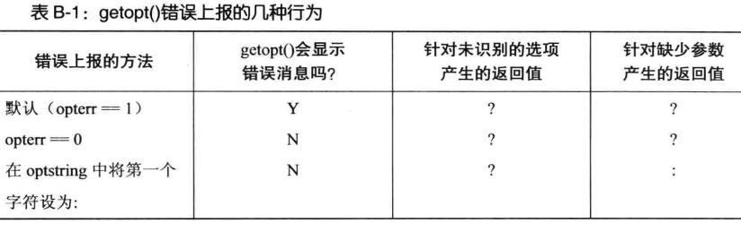

命令行参数解析getopt()和getopt_long()
getopt
getopt或getopt_long 是一个Linux下面的库函数，作用就是解析命令行的输入。其目的就是减轻程序员自己的负担，可以直接使用系统提供的库函数，方便、高效和更安全地解析命令行的输入。
|
getopt() 所设置的全局变量包括：
optarg——指向当前选项参数（如果有）的指针。
optind——再次调用 getopt() 时的下一个 argv 指针的索引。
optopt——最后一个未知选项。
函数 getopt() 解析给定在参数argc和argv中的命令行参数集合。这两个参数通常是从 main() 函数的参数列表中获取。参数 optstring 指定了函数 getopt() 应该寻找的命令行选项集合,该参数由一组字符组成，每个字符标识一个选项。SUSv3中规定了 getopt() 至少应该可以接受62个字符[a-zA-Z0-9]作为选项。除了: ? - 这几个对 getopt() 来说有着特殊意义的字符外,大多数实现还允许其他的字符也作为选项出现。
每个选项字符后可以跟一个冒号字符(:),表示这个选项带有一个参数。
我们通过连续调用 getopt() 来解析命令行。每次调用都会返回下一个未处理选项的信息。 如果找到了选项,那么代表该选项的字符就作为函数结果返回。如果到达了选项列表的结尾 getopt() 就返回-1。如果选项带有参数, getopt() 就把全局变量 optarg 设为指向这个参数。
如果选项不带参数,那么 glibc的 getopt() 实现(同大多数实现一样)会将 optarg设为 NULL。但是,SUSv3并没有对这种行为做出规定。因此基于可移植性的考虑,应用程序不能依赖这种行为(通常也不需要)。
每次调用 getopt() 时,全局变量 optind 都得到更新,其中包含着参数列表 argv 中未处理的下一个元素的索引。(当把多个选项归组到一个单独的单词中时, getopt() 内部会做一些记录工作,以此跟踪该单词,找出下一个待处理的部分。)在首次调用 getopt()之前,变量 optind 会自动设为1。在如下两种情况中我们可能会用到这个变量。
1.如果 getopt() 返回了-1,表示目前没有更多的选项可解析了,且 optind 的值比argc要小,那么 argv[optind]就表示命令行中下一个非选项单词。
2.如果我们处理多个命令行向量或者重新扫描相同的命令行,那么我们必须手动将 optind 重新设为1。
在下列情况中, getopt() 函数会返回-1,表示已到达选项列表的结尾。
1.由 argc 加上 argv 所代表的列表已到达结尾(即 argv[optind]为NULL)。
2.argv中下一个未处理的单字不是以选项分隔符打头的(即, argv[optind][0]不是连字符)。
3.argv中下一个未处理的单字只由一个单独的连字符组成(即, argvloptind] 为 -)。 有些命令可以理解这种参数,该单字本身代表了特殊的意义。
4.argv中下一个未处理的单字由两个连字符(-)组成。在这种情况下, getopt() 会悄悄地读取这两个连字符,并将 optind 调整为指向双连字符之后的下一个单字。就算命令行中的下一个单字(在双连字符之后)看起来像一个选项(即,以一个连字符开头), 这种语法也能让用户指出命令的选项结尾。比如,如果我们想利用grep在文件中查找字符串 -k,那么我们可以写成
|
如果在处理期间遇到了不符合optstring指定的其他选项getopt()将显示一个错误消息，并将全域变量optopt设为“?”字符，如果不希望getopt()打印出错信息，则只要将全域变量opterr设为0即可。
当 getopt() 在处理选项列表时,可能会出现两种错误。一种错误是当遇到某个没有指定在 optstring 中的选项时会出现。另一种错误是当某个选项需要一个参数，而参数却未提供时会出现(即,选项出现在命令行的结尾)。有关 getopt() 是如何处理并上报这些错误的规则如下。
1.默认情况下, getopt()在标准错误输出上打印出一条恰当的错误消息,并将字符 ? 作为函数返回的结果。在这种情况下,全局变量 optopt 返回出现错误的选项字符(即,未能识别出来的或缺少参数的那个选项)。
2.全局变量 opterr 可用来禁止显示由 getopt() 打印出的错误消息。默认情况下,这个变量被设为1。如果我们将它设为0,那么 getopt() 将不再打印错误消息,而是表现的如同 上一条所描述的那样。程序可以通过检查函数返回值是否为?字符来判断是否出错, 并打印出用户自定义的错误消息。
3.此外,还有一种方法可以用来禁止显示错误消息。可以在参数 optstring 中将第一个字符指定为冒号(这么做会重载将 opterr 设为0的效果)。在这种情况下,错误上报的规则同将 opterr 设为0时一样,只是此时缺失参数的选项会通过函数返回冒号:来报告。如果需要的话,我们可以根据不同的返回值来区分这两类错误(未识别的选项,以及缺失参数的选项)。

optstring中的指定的内容的意义（例如getopt(argc, argv, "ab:c:de::");）
1.单个字符，表示选项（如下例中的abcde各为一个选项）。
2.单个字符后接一个冒号：表示该选项后必须跟一个参数。参数紧跟在选项后或者以空格隔开。该参数的指针赋给optarg（如下例中的b:c:）。
3 单个字符后跟两个冒号，表示该选项后可以跟一个参数，也可以不跟。如果跟一个参数，参数必须紧跟在选项后不能以空格隔开。该参数的指针赋给optarg。(如上例中的e::，如果没有跟参数，则optarg = NULL)
getopt_long
|
getopt被用来解析命令行选项参数。
getopt_long支持长选项的命令行解析
函数中的argc和argv通常直接从main()的两个参数传递而来。optsting是选项参数组成的字符串：
字符串optstring可以下列元素:
1.单个字符，表示选项，
2.单个字符后接一个冒号：表示该选项后必须跟一个参数。参数紧跟在选项后或者以空格隔开。该参数的指针赋给optarg。
3 单个字符后跟两个冒号，表示该选项后可以有参数也可以没有参数。如果有参数，参数必须紧跟在选项后不能以空格隔开。该参数的指针赋给optarg。（这个特性是GNU的扩张）。
optstring是一个字符串，表示可以接受的参数。例如，"a:b:c:d:"，表示可以接受的参数是a,b,c,d，其中，a和b参数后面跟有更多的参数值。(例如：-a host -b name)
参数longopts，其实是一个结构的实例：
|
结构中的元素解释如下：
const char *name：选项名，前面没有短横线。譬如”help”、”verbose”之类。
int has_arg：描述长选项是否有选项参数，如果有，是哪种类型的参数，其值见下表:
符号常量 数值 含义
no_argument 0 选项没有参数
required_argument 1 选项需要参数
optional_argument 2 选项参数是可选的
int *flag：
如果该指针为NULL，那么getopt_long返回val字段的值；
如果该指针不为NULL，那么会使得它所指向的结构填入val字段的值，同时getopt_long返回0
int val：
如果flag是NULL，那么val通常是个字符常量，如果短选项和长选项一致，那么该字符就应该与optstring中出现的这个选项的参数相同；
最后一个参数：longindex参数一般赋为NULL即可；如果没有设置为NULL，那么它就指向一个变量，这个变量会被赋值为寻找到的长选项在longopts中的索引值，这可以用于错误诊断。
optind和argc
|
-a、-b、-c是选项参数，url是非选项参数，选项参数的选项参数字符串中声明的。
//argv[optind]是第1个非选项参数
//optind指选项参数的个数（包括程序名）
//argc指全部参数的个数
//url不是选项